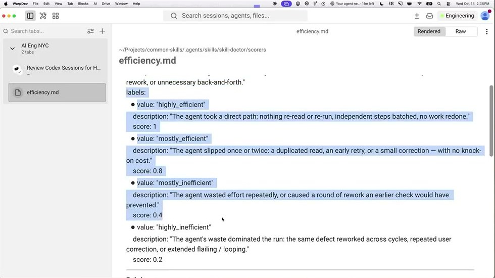

Factory engineering: optimizing the harness around the wheel
Holmes works on Warp Factories, infrastructure for teams building automated software development lifecycles where agents triage tasks from boards or Slack, draft specs with humans, implement changes, capture screenshots via computer use, and run adversarial code review before opening a pull request. Once that delivery wheel turns reliably, the high-leverage work shifts to what he calls factory engineering: the meta-engineering discipline of improving the harness, codebase structure, and skills driving the agents.
Rather than relying on vague intuition about where agents struggle, Holmes frames skill tuning as a closed feedback loop. Scoring agents act as LLM judges over completed runs across metrics like efficiency, code quality, and test coverage; a downstream agent filters the failing runs, finds shared root causes, wakes up on a cron schedule to propose skill or codebase fixes, and tracks whether subsequent scores actually climb.
“It's the idea of actually putting in engineering work to improve the system that is driving the agents themselves.”00:01:44
- Software factories automate the loop from task triage and spec writing through implementation, computer-use verification, and adversarial review.
- Factory engineering treats the agent harness, codebase architecture, and skill definitions as explicit optimization targets.
- Self-improvement runs as a four-step cycle: review past sessions, score against rubrics, isolate recurring failures, and propose changes on a schedule.
Evidence: transcript 00:00:00, 00:01:44 · watch the factory-engineering framing
Centralizing traces to catch silent workarounds
Before any judge can grade agent work across a team, conversations have to live in one place. Local harnesses like Claude Code, Codex, and Pi (transcribed as "Py") scatter JSONL logs across individual laptops, leading some teams Holmes spoke with to zip up .claude folders (heard as "dot clone folders") into shared S3 buckets, whereas cloud runners like Warp's isolated Docker sandboxes capture every team trace in one store automatically. Crucially, a usable trace needs three artifacts together: the dialogue transcript, every external tool, filesystem, and MCP call, and the resulting code diff or pull request.
Having full tool calls in the trace matters because unattended agents quietly route around broken setups without reporting them. In Warp's own test harness, outdated skill instructions left agents pinging local port numbers by trial and error until tests ran; from the outside, runs simply took two minutes longer than expected. Alongside tool-call efficiency, Holmes highlights two other high-signal team rubrics: redundant tests, catching agents that pile on extra unit tests, and verbosity, since excessive code comments and wordy PR summaries slow down human code review, the tightest bottleneck in the loop.
“these AIs are very persistent and will work around whatever roadblock that they run into, and they won't tell you about it.”00:06:06
- Team-wide introspection requires three artifacts per run: the conversation transcript, tool/MCP/filesystem calls, and the output diff.
- Cloud Docker sandboxes centralize team traces automatically without syncing local
~/.claudeor~/.codexdirectories to S3. - Tool-call traces expose silent brute-forcing, such as port probing around stale test instructions, alongside redundant tests and comment bloat.
Evidence: transcript 00:03:12, 00:06:06 · watch the trace & efficiency discussion
Markdown judge rubrics and post-merge grading
A scorer in Warp's setup is a plain markdown file shaped like a high-school essay rubric. On screen, efficiency.md defines four discrete tiers (highly_efficient at 1, mostly_efficient at 0.8, mostly_inefficient at 0.4, and highly_inefficient at 0.2), followed by concise assessment bullets covering rework from mistakes, cost to the human, information gathering, and routine-step overhead. Anything at 0.4 or 0.2 falls below the pass line and flags the session for deeper review.
In production, merging a pull request triggers a grading run across either every merged session or a random sample to save tokens. Walking through a sample full-stack auth-service PR, Holmes shows how one session can pass verbosity because the chosen model skipped noisy inline comments, yet fail redundant tests for writing unit tests where team guidelines prefer end-to-end tests, and fail efficiency for exploring how to boot the test environment from scratch. Every twenty-four hours, a cron job filters the past day's ~200 graded runs down to roughly fifty failures and hands their written rationales, plus repository and skills access, to a self-improvement agent.

“So automatically, usually the trigger being a PR merged, kick in an agent to review that conversation across your grading criteria.”00:08:55
- Scorer files are concise markdown rubrics with numeric score tiers (
1,0.8,0.4,0.2) and explicit pass/fail cutoffs. - Merging a PR triggers judge agents that record both pass/fail grades and plain-text explanations of why a session failed.
- A daily cron job filters recent runs down to failing sessions and feeds their notes to a self-improvement agent that proposes skill or repo changes.
Evidence: transcript 00:08:55 · watch the efficiency.md rubric walkthrough
Skill Doctor: batch-auditing local logs into a report card
For developers working locally rather than inside a cloud software factory, Holmes packaged the same grading pipeline into a standalone skill called Skill Doctor (heard in the room transcript as "work. Dead slash skill doctor" for warp.dev/skill-doctor). Pointed at local Claude, Codex, or Pi session logs, it batches condensed transcripts through scorer subagents for token efficiency and compiles a one-shot HTML report card.
In his live demo over twelve Codex sessions on a desktop project, the rendered Agent Skill Report gave the setup an overall B (83), with 100 on verbosity (garbled as "for Basu" in ASR) and skill coverage (16 of 19 installed skills used), 80 on procedure compliance, 75 on code quality, and 73 on efficiency. Beneath the bars, the report surfaced concrete cross-session findings: pushing to origin instead of contributor forks in three of twelve runs, skipping writing-tests and changelog skills when needed, and leaving visual UI bugs unverified.
“But this is a skill that you can run on your single-player setup, and it'll crawl through all of your agent conversations in Claude, Codex, Py, or whatever else and just do a one-time grading.”00:13:43
Skill Doctorruns a one-time batch audit across local Claude, Codex, or Pi JSONL transcripts without requiring cloud infrastructure.- On twelve sample Codex runs, the report card pinpointed lagging efficiency (
73) and code quality (75) despite perfect verbosity (100). - Cross-session findings cited exact counts, such as pushing to the wrong git remote in 3 of 12 sessions, rather than generic advice.
Evidence: transcript 00:13:43 · watch the Skill Doctor live audit
Turning failure notes into concrete SKILL.md diffs
Rather than stopping at grades, Skill Doctor drafts targeted diffs against the project's SKILL.md files, citing the exact failed session IDs as evidence at the top of each recommendation. In Holmes's demo, scoring notes caught the agent repeatedly fighting local port numbers during desktop app testing because it lacked upfront environment setup instructions; the proposed edit to test-desktop-app/SKILL.md documented HUBBLE_DESKTOP_DEBUG_PORT for parallel worktrees so the agent stopped wasting tool calls probing ports.
A second proposed diff rewrote changelog/SKILL.md after three sessions required manual human edits or missed the changelog entry altogether. The highlighted addition made the formatting rule unmistakable: name a new feature once in user-facing release notes instead of listing every sub-feature, option, and edge case, eliminating repetitive PR review nits.
“So this proposed a change to the end-to-end testing skill, to have the agent get better instructions on finding a port number first, and then going, instead of just banging against the wall until it got running, so that can save a little bit of efficiency in the tool calls.”00:13:43
- Every proposed
SKILL.mddiff cites specific failed session IDs and failure categories as evidence. - Adding explicit port-discovery instructions (
HUBBLE_DESKTOP_DEBUG_PORT) eliminated blind port-probing in desktop end-to-end tests. - Tightening
changelog/SKILL.mdto forbid sub-feature laundry lists removed recurring manual edits during PR wrap-up.
Evidence: transcript 00:13:43 · watch the proposed SKILL.md diffs
Score inflection dashboards over opaque overnight memory
Holmes closes by contrasting rubric-backed self-improvement with autonomous agent memory or "overnight dreaming" systems. While background memory lets an agent reflect on past runs, its takeaways remain invisible and unverified; tracking rubric pass rates on a time-series dashboard lets engineers see whether merging a proposed skill PR actually moved an average score from 50–60% upward at a clear inflection point, or changed nothing at all.
Inside Warp's own internal DevEx Factory dashboard, nine live scorers track specific operational behaviors, from Redundant Tests (100%) and Change Requested (97%) to Complete Task Compliance (74%), and feed a review inbox of self-improvement PRs. One merged PR he highlighted caught a missing permission in their triage agent's configuration: the agent had been burning tool calls trying to spawn subagents without the config flag enabled, and patching the factory setup removed the wasted loop permanently.
“So the agent's constantly scoring setups and it's giving grades of like 50%, 60% on average, and you can attribute changes that you made in your agent setup to inflections in the score.”00:16:10
- Overnight memory loops hide what the agent learned; time-series rubric charts verify whether a merged skill PR actually raised pass rates.
- Warp's internal factory dashboard tracks specialized scorers (
Redundant Tests,Slack MCP Reply,Complete Task Compliance) over rolling windows. - Continuous trace grading caught a missing subagent permission in Warp's triage config that had been silently wasting tool calls.
Evidence: transcript 00:16:10 · watch the score-inflection dashboard